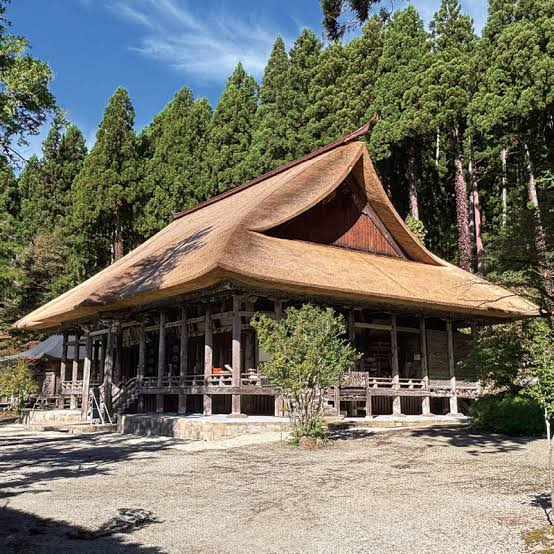
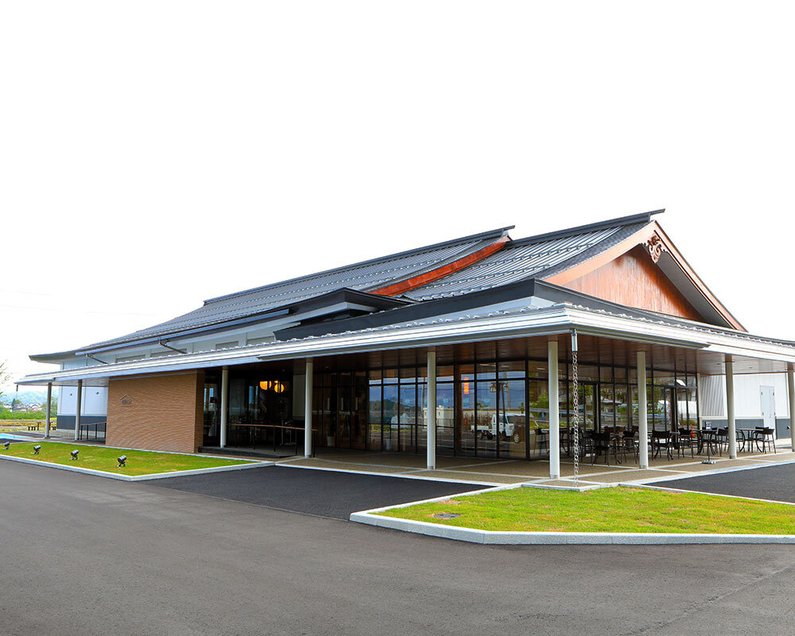
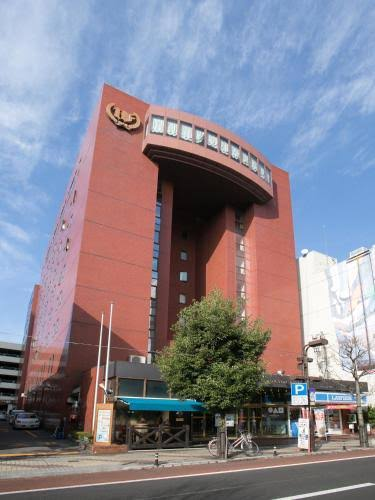
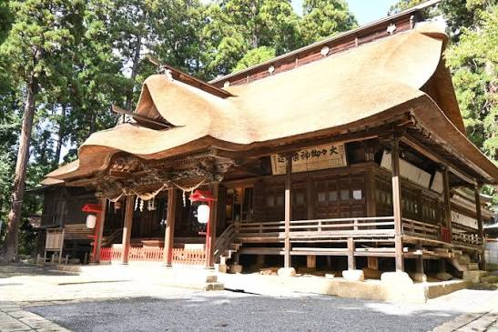
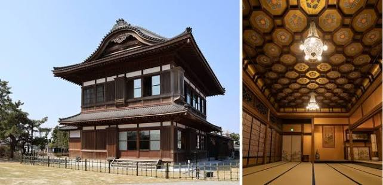
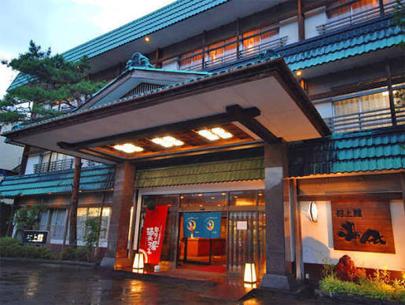
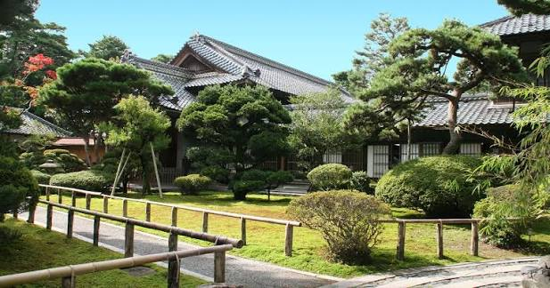
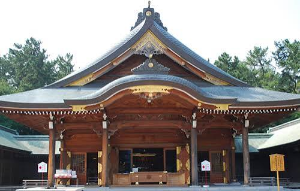

9月2日(水) 〜 9月4日(金) | 新潟・山形

天平18年（746年）開山と伝わる出羽の名刹。室町時代の密教建築の様式を残す本堂や、数々の国指定重要文化財の仏像群を拝観します。

史跡慈恩寺の歴史や文化財をパネルや映像展示でわかりやすく紹介する総合案内施設です。

1日目の宿泊先。山形市中心部の七日町エリアに位置するホテルです。

「東北の伊勢」と称される由緒ある神社。県内最古の茅葺き屋根建築である拝殿や、本殿裏の「3羽のうさぎ」の繊細な隠し彫りで知られます。

大倉喜八郎の和洋折衷別邸。大成建設による解体・移築・耐震復元構造を学びます。交代時間には周辺（諏訪神社、王紋酒造、清水園等）を自由に散策します。

2日目の宿泊先。エメラルドグリーンに輝く素晴らしい効能の温泉と風情溢れる空間を体験します。

越後の豪農・伊藤家の旧邸宅。100畳の大広間をはじめとする圧巻のスケールの純和風建築や庭園、戦後の民営文化財保存の原点を学びます。

戊辰戦争以降の郷土の戦没者を祀る神社。昭和20年に造営された荘厳な白木造りの社殿と静謐な境内を見学します。